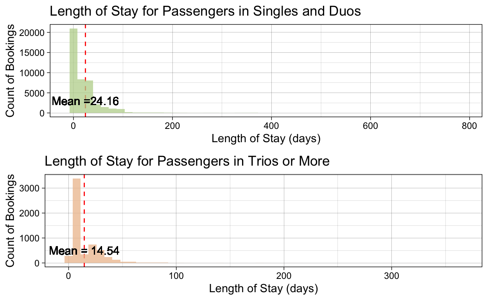

Air Travel Story

Intro to data: This dataset examined the booking trends of 50,000 bookings. Some metrics in this dataset included the number of passengers per booking, day of flight departure, departure hour, flight duration & more! This story explores the difference of booking patterns between groups of 2 and under versus groups of three or more passengers.
Flight Duration Across Different Passenger Groups
Out of 50,000 bookings analyzed, groups of three or more passengers typically experience median flight durations of 7.05 hours, while singles and duos have slightly longer median flights at 7.5 hours.
Booking Dates for Passengers in Singles & Duos versus Trios & More
Using these histograms, we are able to see the distribution of the days between booking and travel dates for different numbers of passengers. Separated by two histograms, groups of 3 or more passengers book their flights an average of 46 day in advance from their travel date. It may be important to note that usually, group flights require more planning and preparing, which leads to needing to book flights in advance.
Interactive Plot: Trends by Flight Hour for Different Passenger Groups
This interactive plot lets you analyze the trends of departure time for each passenger groups and the count for each flight time! As a single traveler myself, I might be more enticed to book a flight at less busier times.
Flight Day vs.Flight Hour Heatmap
This heat map analyzes the different flight hour-flight day combinations. Based off this graph, we can see the biggest combinations come are from Monday through Thursday 8am to 1pm. This helps us understand how busy an airport can get on specific days and times of the week. For future travelers, this could be helpful in deciding which flights will have the calmest or quietest airport environment. It could even help you determine when TSA lines will be the shortest!
Length of Stay for Different Passenger Groups

Using this histogram, we can see that the length of stay for singles and duos last about 9.62 days longer than groups of 3 or more passengers. In terms of relationships, it is typically less expensive to travel as a couple rather than as a family, possibly leading to an increased number of days on vacation.
Bookings by Day of the Week for Different Passenger Groups
This dataset analyzes 50,000 bookings using metrics such as passenger count for each booking and what day of the week it was booked for. Using these two metrics, we can see which day of the week is most common for different number of passengers in this interactive plot. This could influence the decision on what day of the week to book a flight based on how many passengers in your group!